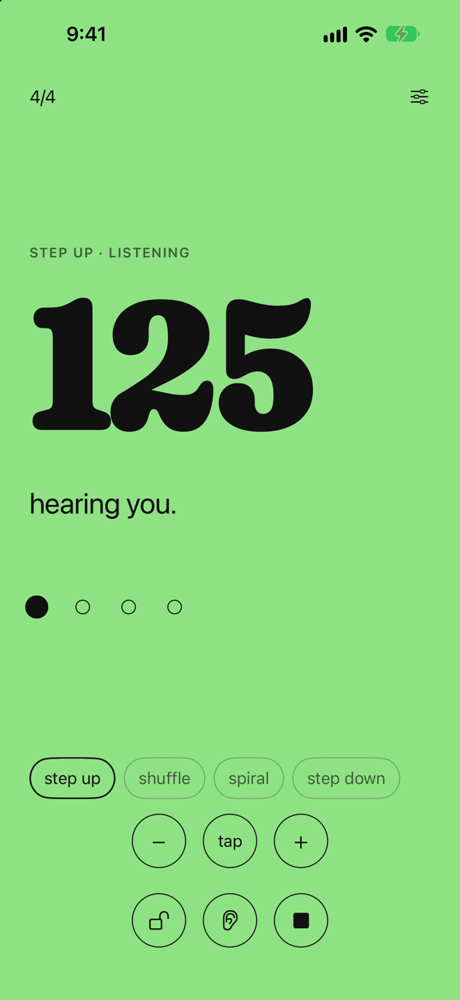
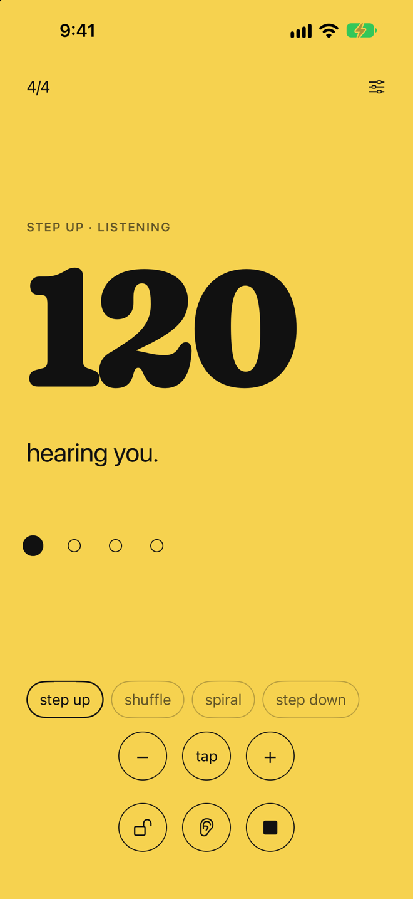
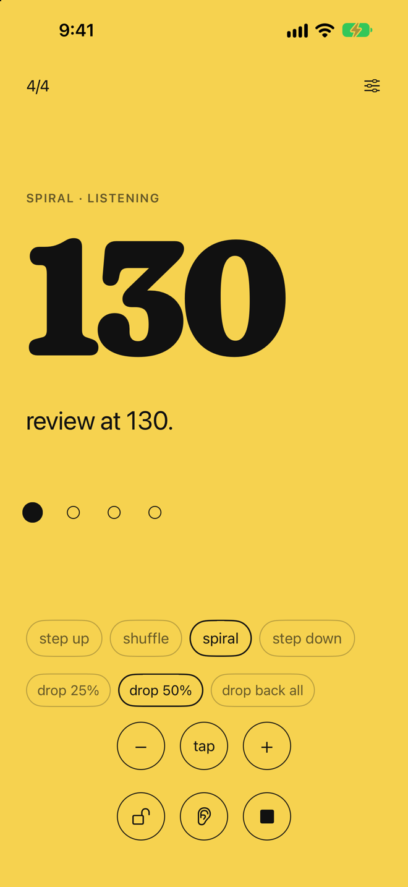
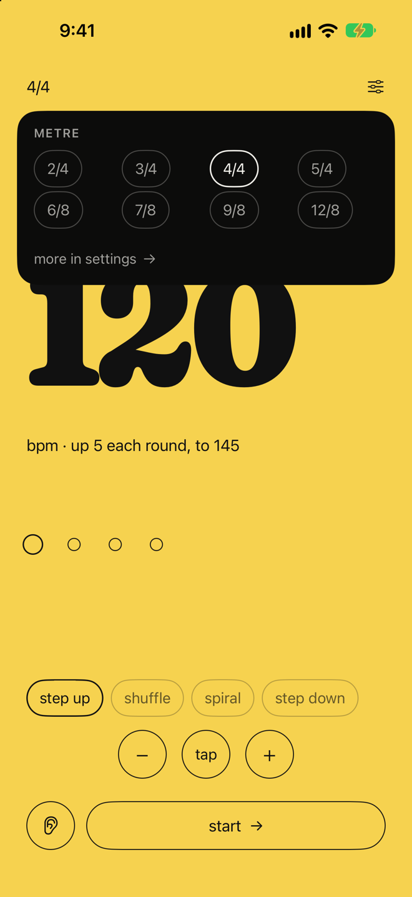
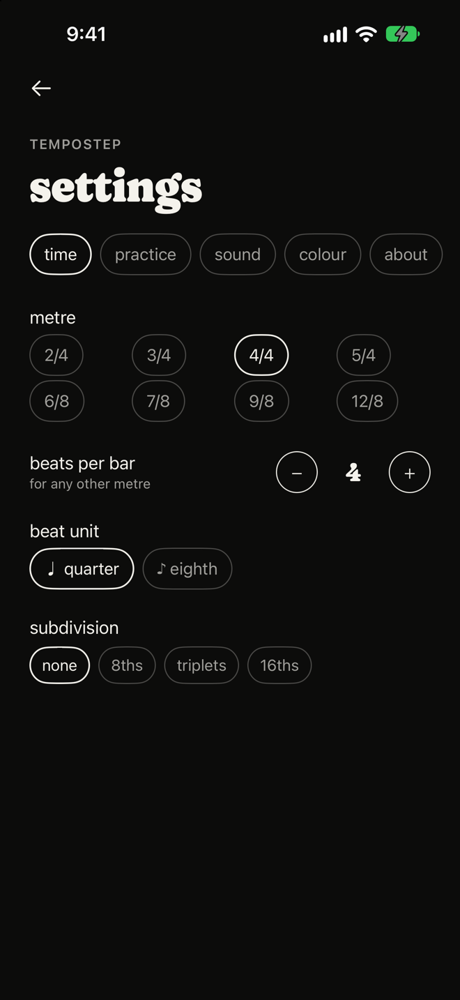

Step Up
Climb from a starting BPM toward a target you set. Each silence advances the tempo by your chosen increment.
Best for: building speed on a passage you've roughed in but not yet locked at tempo.
TempoStep is an iOS metronome that advances the tempo when you stop playing.
One sentence
TempoStep is an iPhone metronome that listens and moves the tempo up when you stop playing.
50 words
TempoStep is an iPhone metronome that moves the tempo up when you stop playing. The microphone measures your room, hears your instrument, and waits for silence. Then it steps the BPM toward the goal you set. Your hands stay on the instrument.
Full description
TempoStep is an iOS metronome for targeted tempo practice. It advances when you stop playing, not on a bar count or a timer. The app measures the noise floor in your room, then listens as you play. When you stop, a silence countdown begins; when it ends, the BPM steps up by an increment you set, toward a target you've chosen. Rest as long as you need between passes; the next tempo is already set when you start playing again. Four practice modes (Step Up, Shuffle, Spiral, Step Down) cover building toward a goal, adapting to unexpected speeds, reinforcing intermediate speeds, and working down from a fast tempo. The screen is a flat color card with a large serif tempo number, in seven color themes. It keeps working in the background alongside forScore, IMSLP or a tuner. One-time purchase, no subscription, no ads. Built by Alan Molina, an orchestral violinist who got tired of reaching for the metronome between every pass.
Set a starting BPM. The metronome clicks. The mic listens in the background.
Stop to think, stretch, or reset. The app hears the silence and waits for you.
The BPM moves by the step you set and the screen flashes to another color. You never touch a button.
Reach the goal BPM and you get a chime, three taps and a color flash.
On start, TempoStep measures your room for two seconds. Stay quiet. The screen says "stay quiet, measuring the room." The reading sets a threshold above steady background noise.
The screen says "hearing you." while you play. It will not advance while it hears sound.
When you stop, the screen counts down, for example "next, 125 in 2 seconds." The wait is set in Settings.
When the countdown ends, the tempo steps up by the step you set. Take as long as you need before you start again.
Step Up mode. Further demos covering Shuffle, Spiral, and Step Down are in production.
A live session: TempoStep listens, detects silence, and steps the BPM on its own between passes.

Climb from a starting BPM toward a target you set. Each silence advances the tempo by your chosen increment.
Best for: building speed on a passage you've roughed in but not yet locked at tempo.

Each silence picks a new random BPM around the target, within 10, 20 or 30 percent.
Best for: passages already at tempo, so the music doesn't settle at one speed.

After three steps up, the tempo drops back partway, then climbs again. Each speed gets more than one pass.
Best for: difficult passages where each intermediate tempo needs more than one pass to settle.

Start fast and walk the tempo down to a floor you set.
Best for: sessions that begin near performance speed and need to find precision at slower tempi.
The mic hears when you stop and when you begin again. The BPM steps toward the target on its own.
A two-second baseline sets a threshold for your room.
Auto advance keeps working with forScore, IMSLP, a tuner, or anything else open on the phone.
Tap along a few times and the BPM follows.
None, 8ths, triplets, 16ths. Set in Settings.
The lock keeps the tempo in place until you unlock it. Auto mode only.
Mic off. Plain metronome; press next to move up. No calibration.
Set how long the silence lasts before the tempo advances.
2/4 to 12/8 from a picker under the tempo.
Seven color themes.
Some apps ramp the tempo on a bar count, a timer or a smooth climb.
"I've spent decades in the practice room working through passages by changing tempi. Stop. Reach for the metronome. Reset. Start again. It's a small interruption, but it breaks momentum. TempoStep removes that moment."
Alan Molina. Orchestral violinist · Independent developer · Maker of TempoStep
All assets free to use in editorial coverage of TempoStep.







All screenshots, app icon, wordmark, and clean demo MP4 in a single archive.